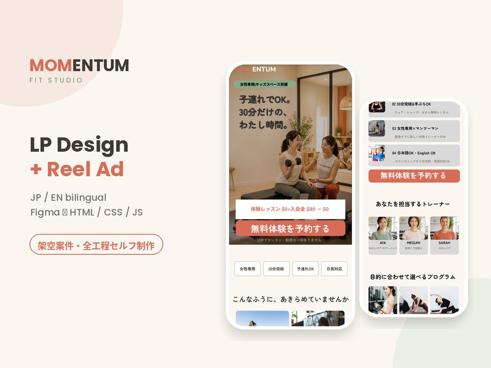
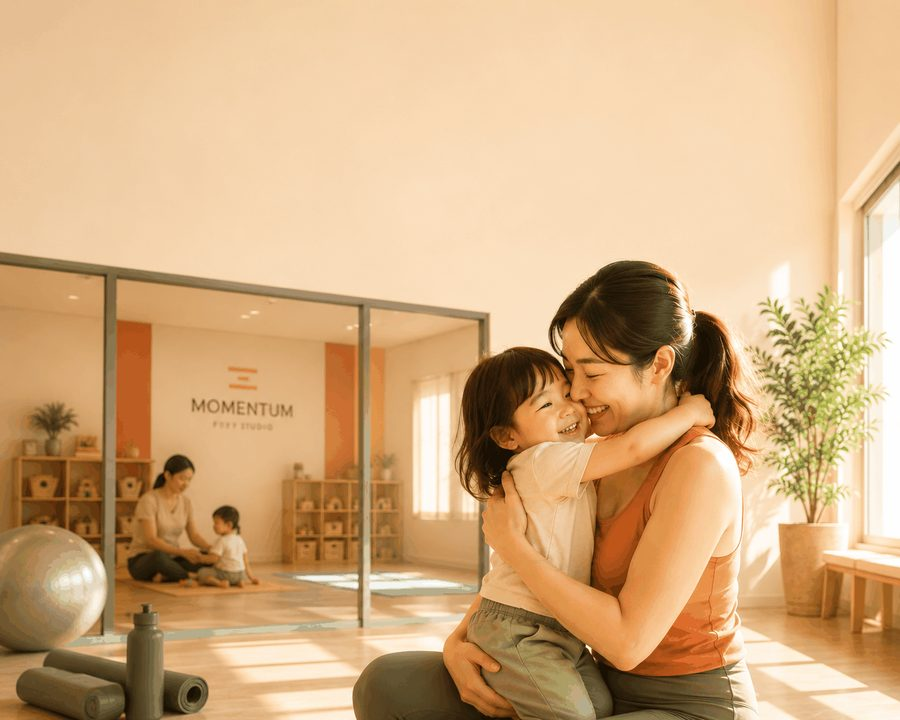
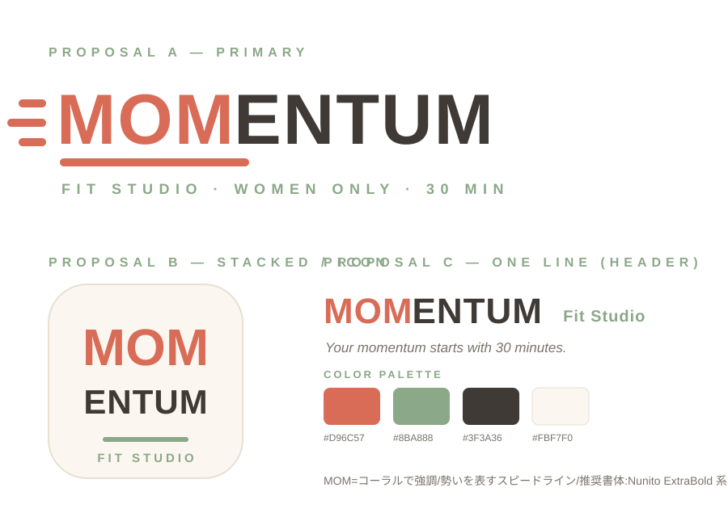
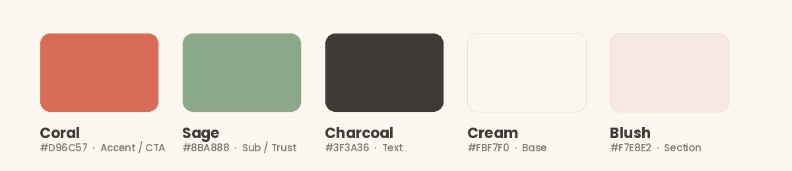
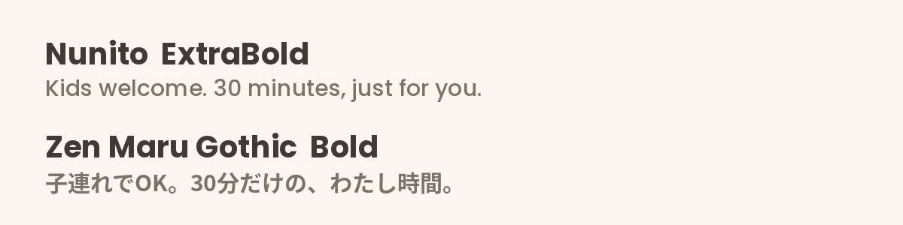
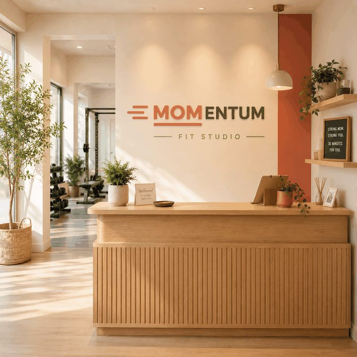
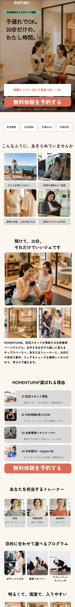
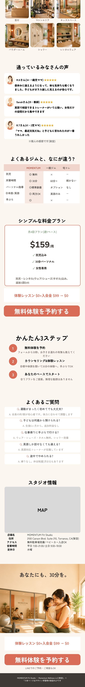
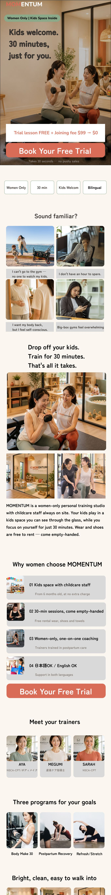
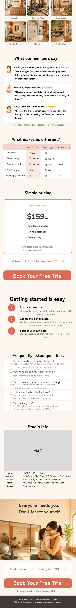

カリフォルニア・Torranceの女性専用パーソナルジム（架空）。商材設定・リサーチ・ペルソナ設計から、ブランド構築、リール広告、LPデザイン、コーディング、予約フォームの実装まで一人で担当しました。
A women-only personal training studio in Torrance, California (concept project). I handled everything myself — from research and persona work to brand identity, the Reel ad, LP design, front-end coding and the reservation form.

ジムに通いたい気持ちはあるのに、子どもを預けられない・時間がない・人目が気になる。この「行けない理由」を1つずつ外していかないと、どんなに良いLPでも予約にはつながりません。
They want to train, but there's no one to watch the kids, no spare hour, and the gym feels intimidating. Unless each of those reasons is removed one by one, no landing page will convert.
加えて今回は、Instagramのリール広告からの流入が前提。動画で心が動いた人が着地したとき、「さっき見たあの場所だ」と感じられなければ、そこで離脱してしまいます。広告とLPを別々に作るのではなく、ひとつの体験として設計する必要がありました。
On top of that, all traffic arrives from an Instagram Reel. If the page doesn't feel like the place they just watched, they leave. The ad and the landing page had to be designed as one continuous experience, not two separate deliverables.
日本のジムのLPでは「託児あり」は強いUSPになります。しかし舞台をカリフォルニアに置いた時点で前提が変わりました。米国の大手ジムには Kids Club（託児）が標準で付いていることが多く、「託児あり」だけでは選ばれる理由になりません。
In Japan, "childcare available" is a strong differentiator for a gym. Moving the studio to California changed that: large U.S. gyms commonly include a Kids Club as standard, so childcare alone is not a reason to choose you.
全米有数の日系コミュニティ。日本語話者とローカル、2つの層が同じエリアに存在する。
One of the largest Japanese communities in the U.S. — Japanese speakers and local residents share the same neighborhood.
大手は託児付きが標準。ただし「広くて続かない」「指導は別料金」という不満が残る。
Big-box gyms already offer childcare, but members drift away — too big, and coaching costs extra.
言語・時間・人目。障壁は複数あり、1つ潰すだけでは足りない。
Language, time and self-consciousness all get in the way. Removing one is not enough.
同じエリアに住み、同じ「自分の時間がない」という悩みを抱えながら、入り口の不安がまったく違う2人を設定しました。この2人を1つのLPで受け止めるために、日英バイリンガル対応は「あるとおしゃれ」ではなく必須要件になりました。
Two women living in the same area with the same problem — no time for themselves — but with completely different hesitations. Supporting both in a single page is what made bilingual design a requirement, not a decoration.
リサーチの結論として、訴求の軸を作り直しました。単独では勝てない要素でも、掛け合わせれば競合が真似しにくい価値になります。この判断が、そのままLPの構成順・コピー・写真選びの基準になりました。
Research led me to rebuild the core message. Individually these features don't win; combined, they're hard for competitors to copy. This decision became the rule for section order, copy and photo direction across the whole project.
「託児付きジム」ではなく、
働く女性とママのための、通い続けられる30分。
Not "a gym with childcare" — but 30 minutes that busy women and moms can actually keep coming back to.
体型を否定するコピーは使わない、と最初に決めました。ターゲットが本当に手放しているのは体型ではなく、自分の時間だからです。このコンセプトは、リールの1カット目からLPの最後の一文まで一度も変えていません。
I decided early on not to use any copy that criticises how someone looks. What these women have actually given up isn't their body — it's their own time. This concept never changed, from the first frame of the Reel to the last line of the page.

MOMENTUM（勢い・弾み）の頭3文字が MOM になっていることに着目し、ロゴでその部分だけを強調しました。「ママが自分の勢いを取り戻す」というブランドの意味が、名前そのものに宿ります。
MOMENTUM begins with MOM. The logo highlights those three letters, so the brand's meaning — a mom regaining her own momentum — lives inside the name itself.




セクションを並べる順番は、ユーザーの頭に浮かぶ疑問の順番で決めました。共感でつかみ、解決策を見せ、信頼の材料を積み、最後に価格と手続きを説明する。読み進めるほど、断る理由がなくなる構造です。
Section order follows the order the questions arise in the reader's head: empathy first, then the solution, then proof, and only then price and process — so that by the end, the reasons to say no have run out.
数値の実績（会員数や満足度）は、架空案件で根拠を示せないため使用していません。代わりに「女性専用／30分完結／子連れOK／日英対応」というUSPバーに置き換え、事実だけで信頼を作る構成にしています。
I avoided invented statistics such as member counts or satisfaction rates. Instead the page uses a USP bar — women-only, 30 minutes, kids welcome, bilingual — building trust only on things that are actually true.
スマホ版を横に引き伸ばすのではなく、PCではファーストビューを「左コピー＋右ビジュアル」に組み替え、悩みカードは横一列、レビューは3列に再設計しました。動画もPC用に16:9素材を別途用意し、デバイスごとに最適な体験になるようにしています。
Rather than stretching the mobile layout, the desktop hero is rebuilt as copy on the left and visuals on the right, with the empathy cards in a single row and reviews in three columns. Separate 16:9 video was produced for desktop so each device gets its own experience.




夜の疲れた部屋から始め、明るいスタジオへ切り替える。色温度そのものが Before / After になるよう設計しました。最後は「ジム」ではなく「親子」で終わらせ、LPのクロージングと同じ画で着地させています。
It opens in a dim living room at night and cuts to a bright studio — the colour temperature itself becomes the before and after. It closes on the family, not the gym, landing on the same image the page ends with.
映像素材はAIで生成し、写真から動画化。ナレーションも日英2バージョンを用意しました。広告とLPで同じ人物・同じスタジオを使うことで、クリック直後の「さっき見た場所だ」という認識を作っています。
The footage was generated with AI and animated from stills, with narration recorded in both languages. Using the same people and the same studio in the ad and on the page creates instant recognition after the click.
CTAを置いて終わりにせず、予約ページまで設計・実装しました。運用する側が実際に必要とする情報を、ユーザーが答えやすい順番で並べています。
Instead of stopping at the call to action, I designed and built the booking page as well — asking for exactly what the studio would need to run the session, in an order that's easy to answer.
託児は強い訴求に見えて、市場が変われば当たり前になる。誰に売るのかを先に決めないと、訴求は的を外します。
Childcare looks like a strong hook until the market changes and it becomes standard. Deciding who you're selling to has to come first.
同じ人物・同じ場所・同じコピーで揃えるだけで、クリック後の離脱理由が1つ減ります。
Matching the people, the place and the copy removes one whole reason to bounce after the click.
動画は3箇所に絞り、数値実績は削除。要素を減らしたほうが、伝えたいことが強くなりました。
Video is used in only three places and invented statistics were cut. Removing elements made the message stronger.
読み込み速度やフォームの失敗表示まで自分で担当したことで、デザイン段階の判断も現実的になりました。
Handling load speed and form error states myself made my design decisions more grounded.
LPのデザインだけでなく、企画・ブランド設計・広告動画・実装・公開まで一貫してお手伝いできます。日英どちらの制作にも対応しています。
I can help with the whole thing — concept, brand, ad creative, design, front-end and launch — in Japanese, English, or both.